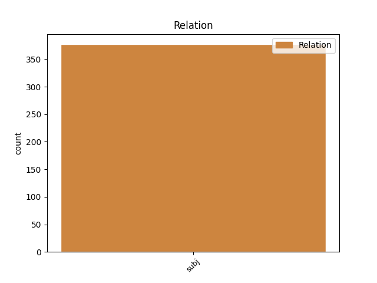
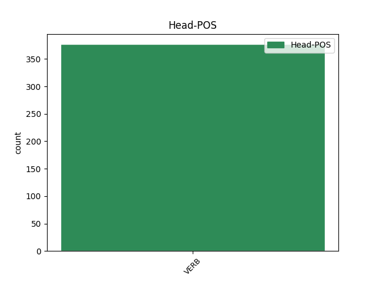
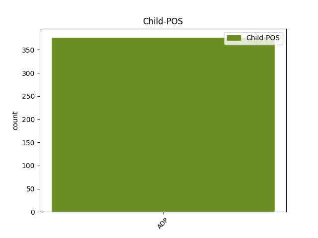

Distribution of features within this leaf



Agreement Rules sorted by frequency.
- When the dependent token is the subject(subj) of the head token, and the head token is VERB and the dependent token is ADP.
1 पर्यवेक्षकों _ _ _ _ 0 _ _ _
2 का का ADP PSP AdpType=Post|Case=Nom|Gender=Masc|Number=Sing 3 subj _ ChunkId=NP|ChunkType=child|Translit=kā
3 कहना कह VERB VM Case=Nom|VerbForm=Inf 0 _ _ _
4 है _ _ _ _ 0 _ _ _
5 कि _ _ _ _ 0 _ _ _
6 इस _ _ _ _ 0 _ _ _
7 मार्च _ _ _ _ 0 _ _ _
8 के _ _ _ _ 0 _ _ _
9 दौरान _ _ _ _ 0 _ _ _
10 कांग्रेसियों _ _ _ _ 0 _ _ _
11 ने _ _ _ _ 0 _ _ _
12 भाजपा _ _ _ _ 0 _ _ _
13 का _ _ _ _ 0 _ _ _
14 जिक्र _ _ _ _ 0 _ _ _
15 करने _ _ _ _ 0 _ _ _
16 से _ _ _ _ 0 _ _ _
17 परहेज _ _ _ _ 0 _ _ _
18 कर _ _ _ _ 0 _ _ _
19 लोगों _ _ _ _ 0 _ _ _
20 में _ _ _ _ 0 _ _ _
21 यह _ _ _ _ 0 _ _ _
22 संदेश _ _ _ _ 0 _ _ _
23 दिया _ _ _ _ 0 _ _ _
24 कि _ _ _ _ 0 _ _ _
25 वह _ _ _ _ 0 _ _ _
26 गांधीवादी _ _ _ _ 0 _ _ _
27 विरासत _ _ _ _ 0 _ _ _
28 को _ _ _ _ 0 _ _ _
29 लेकर _ _ _ _ 0 _ _ _
30 भाजपा _ _ _ _ 0 _ _ _
31 या _ _ _ _ 0 _ _ _
32 किसी _ _ _ _ 0 _ _ _
33 अन्य _ _ _ _ 0 _ _ _
34 पार्टी _ _ _ _ 0 _ _ _
35 से _ _ _ _ 0 _ _ _
36 टकराव _ _ _ _ 0 _ _ _
37 नहीं _ _ _ _ 0 _ _ _
38 चाहती _ _ _ _ 0 _ _ _
39 है _ _ _ _ 0 _ _ _
40 । _ _ _ _ 0 _ _ _
Disagree Examples:
1 बताया _ _ _ _ 0 _ _ _
2 गया _ _ _ _ 0 _ _ _
3 है _ _ _ _ 0 _ _ _
4 कि _ _ _ _ 0 _ _ _
5 राज _ _ _ _ 0 _ _ _
6 ने _ _ _ _ 0 _ _ _
7 अप्रत्यक्ष _ _ _ _ 0 _ _ _
8 रूप _ _ _ _ 0 _ _ _
9 से _ _ _ _ 0 _ _ _
10 उद्धव _ _ _ _ 0 _ _ _
11 की _ _ _ _ 0 _ _ _
12 ओर _ _ _ _ 0 _ _ _
13 इशारा _ _ _ _ 0 _ _ _
14 करते _ _ _ _ 0 _ _ _
15 हुए _ _ _ _ 0 _ _ _
16 सेना _ _ _ _ 0 _ _ _
17 प्रमुख _ _ _ _ 0 _ _ _
18 से _ _ _ _ 0 _ _ _
19 उन्हें _ _ _ _ 0 _ _ _
20 और _ _ _ _ 0 _ _ _
21 उनके _ _ _ _ 0 _ _ _
22 समर्थकों _ _ _ _ 0 _ _ _
23 की का ADP PSP AdpType=Post|Case=Nom|Gender=Fem|Number=Sing 25 subj _ ChunkId=NP8|ChunkType=child|Translit=kī
24 अनदेखी _ _ _ _ 0 _ _ _
25 होने हो VERB VM Case=Acc|Number=Sing|VerbForm=Inf 0 _ _ _
26 की _ _ _ _ 0 _ _ _
27 शिकायत _ _ _ _ 0 _ _ _
28 की _ _ _ _ 0 _ _ _
29 है _ _ _ _ 0 _ _ _
30 । _ _ _ _ 0 _ _ _
1 पार्टी _ _ _ _ 0 _ _ _
2 का का ADP PSP AdpType=Post|Case=Nom|Gender=Masc|Number=Sing 3 subj _ ChunkId=NP|ChunkType=child|Translit=kā
3 कहना कह VERB VM Case=Acc|VerbForm=Inf 0 _ _ _
4 है _ _ _ _ 0 _ _ _
5 कि _ _ _ _ 0 _ _ _
6 सपा _ _ _ _ 0 _ _ _
7 चोरी _ _ _ _ 0 _ _ _
8 और _ _ _ _ 0 _ _ _
9 सीना _ _ _ _ 0 _ _ _
10 -JOIN _ _ _ _ 0 _ _ _
11 जोरी _ _ _ _ 0 _ _ _
12 कर _ _ _ _ 0 _ _ _
13 रही _ _ _ _ 0 _ _ _
14 है _ _ _ _ 0 _ _ _
15 । _ _ _ _ 0 _ _ _
1 मौसम _ _ _ _ 0 _ _ _
2 विभाग _ _ _ _ 0 _ _ _
3 का का ADP PSP AdpType=Post|Case=Nom|Gender=Masc|Number=Sing 4 subj _ ChunkId=NP|ChunkType=child|Translit=kā
4 मानना मान VERB VM Case=Acc|VerbForm=Inf 0 _ _ _
5 है _ _ _ _ 0 _ _ _
6 कि _ _ _ _ 0 _ _ _
7 इस _ _ _ _ 0 _ _ _
8 बारिश _ _ _ _ 0 _ _ _
9 के _ _ _ _ 0 _ _ _
10 बाद _ _ _ _ 0 _ _ _
11 अब _ _ _ _ 0 _ _ _
12 दिल्ली _ _ _ _ 0 _ _ _
13 में _ _ _ _ 0 _ _ _
14 मानसून _ _ _ _ 0 _ _ _
15 के _ _ _ _ 0 _ _ _
16 समय _ _ _ _ 0 _ _ _
17 पर _ _ _ _ 0 _ _ _
18 आने _ _ _ _ 0 _ _ _
19 की _ _ _ _ 0 _ _ _
20 संभावना _ _ _ _ 0 _ _ _
21 बढ़ _ _ _ _ 0 _ _ _
22 गई _ _ _ _ 0 _ _ _
23 है _ _ _ _ 0 _ _ _
24 । _ _ _ _ 0 _ _ _
1 जानकारों _ _ _ _ 0 _ _ _
2 का का ADP PSP AdpType=Post|Case=Nom|Gender=Masc|Number=Sing 3 subj _ ChunkId=NP|ChunkType=child|Translit=kā
3 कहना कह VERB VM Case=Acc|VerbForm=Inf 0 _ _ _
4 है _ _ _ _ 0 _ _ _
5 कि _ _ _ _ 0 _ _ _
6 तिब्बत _ _ _ _ 0 _ _ _
7 के _ _ _ _ 0 _ _ _
8 पठार _ _ _ _ 0 _ _ _
9 की _ _ _ _ 0 _ _ _
10 भौगोलिक _ _ _ _ 0 _ _ _
11 संरचना _ _ _ _ 0 _ _ _
12 को _ _ _ _ 0 _ _ _
13 देख _ _ _ _ 0 _ _ _
14 कर _ _ _ _ 0 _ _ _
15 यह _ _ _ _ 0 _ _ _
16 पक्के _ _ _ _ 0 _ _ _
17 तौर _ _ _ _ 0 _ _ _
18 पर _ _ _ _ 0 _ _ _
19 नहीं _ _ _ _ 0 _ _ _
20 कहा _ _ _ _ 0 _ _ _
21 जा _ _ _ _ 0 _ _ _
22 सकता _ _ _ _ 0 _ _ _
23 है _ _ _ _ 0 _ _ _
24 कि _ _ _ _ 0 _ _ _
25 पारछू _ _ _ _ 0 _ _ _
26 का _ _ _ _ 0 _ _ _
27 खतरा _ _ _ _ 0 _ _ _
28 अब _ _ _ _ 0 _ _ _
29 खत्म _ _ _ _ 0 _ _ _
30 हो _ _ _ _ 0 _ _ _
31 गया _ _ _ _ 0 _ _ _
32 है _ _ _ _ 0 _ _ _
33 , _ _ _ _ 0 _ _ _
34 क्योंकि _ _ _ _ 0 _ _ _
35 इस _ _ _ _ 0 _ _ _
36 क्षेत्र _ _ _ _ 0 _ _ _
37 में _ _ _ _ 0 _ _ _
38 चट्टानें _ _ _ _ 0 _ _ _
39 लगातार _ _ _ _ 0 _ _ _
40 खिसकती _ _ _ _ 0 _ _ _
41 रहती _ _ _ _ 0 _ _ _
42 हैं _ _ _ _ 0 _ _ _
43 । _ _ _ _ 0 _ _ _
1 सामान्य _ _ _ _ 0 _ _ _
2 प्रशासन _ _ _ _ 0 _ _ _
3 विभाग _ _ _ _ 0 _ _ _
4 का का ADP PSP AdpType=Post|Case=Nom|Gender=Masc|Number=Sing 5 subj _ ChunkId=NP|ChunkType=child|Translit=kā
5 कहना कह VERB VM Case=Acc|VerbForm=Inf 0 _ _ _
6 है _ _ _ _ 0 _ _ _
7 कि _ _ _ _ 0 _ _ _
8 इस _ _ _ _ 0 _ _ _
9 मुद्दे _ _ _ _ 0 _ _ _
10 पर _ _ _ _ 0 _ _ _
11 रिमोट _ _ _ _ 0 _ _ _
12 सेंसिंग _ _ _ _ 0 _ _ _
13 रिपोर्ट _ _ _ _ 0 _ _ _
14 आने _ _ _ _ 0 _ _ _
15 के _ _ _ _ 0 _ _ _
16 बाद _ _ _ _ 0 _ _ _
17 ही _ _ _ _ 0 _ _ _
18 कुछ _ _ _ _ 0 _ _ _
19 कहा _ _ _ _ 0 _ _ _
20 जा _ _ _ _ 0 _ _ _
21 सकता _ _ _ _ 0 _ _ _
22 है _ _ _ _ 0 _ _ _
23 । _ _ _ _ 0 _ _ _